4 Exploratory Data Analysis
All truths are easy to understand once they are discovered; the point is to discover them.
Exploratory Data Analysis (EDA) is the stage of data analysis in which we examine a dataset systematically before moving to formal inference or predictive modeling. In the Data Science Workflow (see Figure 2.1), EDA builds on Data Preparation (Chapter 3) and provides the empirical foundation for later Data Setup for Modeling (Chapter 6). Through numerical summaries and visualizations, EDA helps us assess whether variables behave plausibly, how observations are distributed, and which relationships or redundancies deserve closer attention.
EDA is primarily investigative rather than confirmatory. We use it to formulate questions, recognize patterns, detect possible data-quality issues, and guide later analytical decisions. Apparent patterns should therefore be interpreted cautiously: they may suggest useful directions for further analysis, but they do not by themselves establish causal relationships or population-level conclusions. Formal tools for statistical inference, introduced in Chapter 5, build on this exploratory foundation by quantifying uncertainty and assessing whether observed patterns are likely to generalize beyond the available data.
What This Chapter Covers
This chapter first introduces the main objectives and guiding questions of EDA, with attention to choosing suitable tools for categorical, numerical, and multivariate exploration. We then apply these ideas in a guided case study using the churn dataset from the liver package, where the goal is to explore customer attrition before formal modeling begins. The case study examines categorical features, numerical features, and relationships among variables, while emphasizing careful interpretation and clear communication of exploratory findings.
By the end of the chapter, readers should be able to select appropriate graphical and numerical summaries, compare feature behavior across groups, recognize potential redundancy among predictors, and distinguish exploratory patterns from inferential or causal claims.
4.1 Communicating Exploratory Findings with Data Storytelling
Exploratory results become useful when they are communicated in relation to a question, not merely displayed as output. A histogram, scatter plot, box plot, or correlation matrix should help the reader see something that is difficult to grasp from raw data alone, such as variation, overlap, unusual observations, group differences, or change over time. In this context, data storytelling does not mean imposing a narrative on the data. It means arranging visual and numerical evidence so that the main patterns, limitations, and open questions can be understood clearly.
A well-known example of effective exploratory communication is Hans Rosling’s TED Talk New insights on poverty, in which demographic and economic data are used to communicate long-term global development patterns. Figure 4.1 shows a related exploratory visualization based on the gapminder dataset from the liver package. The figure compares GDP per capita and life expectancy across world regions in 1950 and 2019, with point size proportional to population.
Figure 4.1 illustrates how a visualization can support interpretation without requiring a complex statistical model. Across regions, life expectancy and GDP per capita generally increase between 1950 and 2019, although the pace and level of change differ substantially across groups. The figure also shows a positive association between economic development and population health, but this association remains descriptive rather than causal. In the churn case study later in this chapter, we apply the same principle: exploratory graphics and summaries are used to make patterns visible, communicate them clearly, and identify questions that deserve closer analysis. The next section turns this communication principle into a more systematic workflow by introducing guiding questions and commonly used exploratory tools for examining unfamiliar datasets.
4.2 Objectives and Guiding Questions for EDA
A useful starting point in EDA is to clarify what we want to learn from the data. We usually begin by examining individual features: their types, ranges, distributions, missing values, and unusual observations. We then move to relationships among features, including associations with the target variable, correlations among numerical predictors, and possible interactions between categorical and numerical variables. These questions help us identify structure in the data before formal inference or modeling begins.
Exploration becomes more effective when it is guided by focused questions. For a single feature, we may ask whether its values are plausible, whether the distribution is symmetric or skewed, whether missing values occur, and whether extreme observations represent errors or meaningful rare cases. For relationships among features, we may ask whether one variable changes systematically across groups, whether two numerical features are associated, whether predictors contain redundant information, and whether combinations of features reveal patterns that are not visible from univariate summaries alone.
A recurring challenge, especially for students, is choosing which plots or summaries best suit different types of data. Table 4.1 summarizes common exploratory objectives and appropriate tools. The table should be used as a practical guide rather than a fixed rule: the most useful exploratory tool depends on the feature type, the analytical question, and the context in which the data were collected.
| Objective | Data.Type | Techniques |
|---|---|---|
| Examine a numerical feature’s distribution | Numerical | Histogram, density plot, box plot, summary statistics |
| Summarize a categorical feature | Categorical | Frequency table, bar chart, proportional bar chart |
| Identify unusual or extreme observations | Numerical | Box plot, histogram, summary statistics, contextual inspection |
| Detect missing data patterns | Any | Missingness summaries, missingness maps, missingness by group |
| Explore the relationship between two numerical features | Numerical and numerical | Scatter plot, smooth trend, correlation coefficient |
| Compare a numerical feature across groups | Numerical and categorical | Grouped summaries, box plot, violin plot, density plot |
| Analyze relationships between two categorical features | Categorical and categorical | Contingency table, proportional bar plot, mosaic plot |
| Assess correlation among multiple numerical features | Multiple numerical | Correlation matrix, correlation heatmap, scatterplot matrix |
By aligning exploratory objectives with suitable questions and tools, EDA becomes more than a routine collection of plots. It provides a disciplined way to inspect data quality, understand feature behavior, detect redundancy, and identify patterns that may guide later feature construction, statistical inference, and predictive modeling.
The next section applies these principles to customer churn. We use statistical summaries, visual tools, and domain context to examine which patterns in customer behavior may be relevant for understanding account closure.
4.3 EDA in Practice: The churn Dataset
Exploratory data analysis is most useful when it is grounded in a real dataset and guided by a practical question. In this section, we use the churn dataset from the liver package to examine customer attrition in a credit card portfolio. The dataset contains demographic, behavioral, and financial information about customers, together with a binary outcome indicating whether a customer closed their account. Our aim is not to build a predictive model at this stage, but to explore which features vary across churn outcomes and which patterns may deserve closer attention in later analysis.
This walkthrough follows the logic of the Data Science Workflow introduced in Chapter 2. We begin with problem understanding and a brief overview of the dataset, then examine feature types, categorical distributions, numerical summaries, and relationships among variables. Throughout the case study, we use exploratory summaries and visualizations to connect the structure of the data to questions about customer behavior, while avoiding conclusions that would require formal inference or predictive modeling.
Problem Understanding for the churn Dataset
Customer churn refers to the loss of customers over time. In the context of this case study, churn occurs when a customer closes their credit card account. For a bank, this is an important problem because retaining existing customers is often less costly than acquiring new ones, and early identification of customers at risk of leaving may support more targeted retention strategies.
From an exploratory perspective, the main question is not why customers leave in a causal sense, but which observed characteristics are associated with account closure. We therefore examine whether churn appears to differ across demographic groups, service-related features, transaction behavior, credit usage, and changes in activity over time. These exploratory patterns can help us identify variables that deserve closer attention in later statistical inference or predictive modeling.
EDA provides an initial foundation for this task by summarizing feature distributions, comparing churn groups, and examining relationships among variables. At this stage, the aim is to develop a structured understanding of the dataset rather than to make definitive claims about customer behavior. The next subsection therefore examines the structure and contents of the churn dataset before we begin the detailed exploratory analysis.
Overview of the churn Dataset
Before conducting graphical or numerical exploration, we first inspect the structure of the dataset. The churn dataset, available in the liver package, contains information about credit card customers, including demographic characteristics, account history, credit behavior, transaction activity, and customer-service interactions. The outcome of interest is churn, which indicates whether a customer closed their credit card account ("yes") or remained active ("no"). At this stage, we use this outcome to guide exploration rather than to build a predictive model.
library(liver)
data(churn)
str(churn)
'data.frame': 10127 obs. of 21 variables:
$ customer_ID : int 768805383 818770008 713982108 769911858 709106358 713061558 810347208 818906208 710930508 719661558 ...
$ age : int 45 49 51 40 40 44 51 32 37 48 ...
$ gender : Factor w/ 2 levels "female","male": 2 1 2 1 2 2 2 2 2 2 ...
$ education : Factor w/ 7 levels "uneducated","highschool",..: 2 4 4 2 1 4 7 2 1 4 ...
$ marital : Factor w/ 4 levels "married","single",..: 1 2 1 4 1 1 1 4 2 2 ...
$ income : Factor w/ 6 levels "<40K","40K-60K",..: 3 1 4 1 3 2 5 3 3 4 ...
$ card_category : Factor w/ 4 levels "blue","silver",..: 1 1 1 1 1 1 3 2 1 1 ...
$ dependent_count : int 3 5 3 4 3 2 4 0 3 2 ...
$ months_on_book : int 39 44 36 34 21 36 46 27 36 36 ...
$ relationship_count : int 5 6 4 3 5 3 6 2 5 6 ...
$ months_inactive : int 1 1 1 4 1 1 1 2 2 3 ...
$ contacts_count_12 : int 3 2 0 1 0 2 3 2 0 3 ...
$ credit_limit : num 12691 8256 3418 3313 4716 ...
$ revolving_balance : int 777 864 0 2517 0 1247 2264 1396 2517 1677 ...
$ available_credit : num 11914 7392 3418 796 4716 ...
$ transaction_amount_12: int 1144 1291 1887 1171 816 1088 1330 1538 1350 1441 ...
$ transaction_count_12 : int 42 33 20 20 28 24 31 36 24 32 ...
$ ratio_amount_Q4_Q1 : num 1.33 1.54 2.59 1.41 2.17 ...
$ ratio_count_Q4_Q1 : num 1.62 3.71 2.33 2.33 2.5 ...
$ utilization_ratio : num 0.061 0.105 0 0.76 0 0.311 0.066 0.048 0.113 0.144 ...
$ churn : Factor w/ 2 levels "yes","no": 2 2 2 2 2 2 2 2 2 2 ...The dataset is stored as a data.frame with 10127 observations and 21 features. The variables can be viewed in several groups. Demographic features include age, gender, education, marital, income, and dependent_count. Account and relationship features include months_on_book, relationship_count, and card_category, while service-related behavior is captured by months_inactive and contacts_count_12. Credit behavior is described by credit_limit, revolving_balance, available_credit, and utilization_ratio, and transaction activity is summarized by transaction_amount_12, transaction_count_12, ratio_amount_Q4_Q1, and ratio_count_Q4_Q1. The variable customer_ID is an account identifier and is not used as an analytical predictor.
The dataset contains both categorical and numerical features, and this distinction guides the exploratory tools used later in the chapter. Categorical features such as gender, education, marital, income, card_category, and churn are examined using frequency tables and bar plots. Numerical features such as credit_limit, transaction_amount_12, transaction_count_12, and utilization_ratio are explored using summary statistics, histograms, box plots, density plots, and correlation measures. Some variables are also derived from others: for example, available_credit is calculated from credit limit and revolving balance, while utilization_ratio summarizes revolving balance relative to credit limit. These relationships become important when we examine redundancy among predictors later in the chapter.
A targeted summary of selected categorical features helps identify placeholder levels that should be interpreted carefully during EDA:
summary(churn[, c("education", "income", "marital")])
education income marital
uneducated :1487 <40K :3561 married :4687
highschool :2013 40K-60K :1790 single :3943
college :1013 60K-80K :1402 divorced: 748
graduate :3128 80K-120K:1535 unknown : 749
post-graduate: 516 >120K : 727
doctorate : 451 unknown :1112
unknown :1519The output shows that education, income, and marital contain the level "unknown". In this dataset, "unknown" represents missing or unspecified information rather than an ordinary substantive category. For the purpose of EDA, we keep "unknown" as an explicit category so that these responses remain visible in the plots that follow. This choice is appropriate because missing or unspecified responses may themselves reveal structure, for example if the "unknown" group differs across churn outcomes. It should not be interpreted as a final modeling decision, since later modeling workflows may handle these values differently through imputation, missing indicators, or model-specific preprocessing choices. With this clarification, the dataset is ready for categorical, numerical, and multivariate exploration.
Practice: Run
summary(churn)to obtain a summary of the full dataset. Which numerical features show the largest ranges? Which categorical features contain the level"unknown"? How does this output complement the information provided bystr(churn)?
4.4 Exploring Categorical Features
Categorical features group observations into distinct classes and often capture demographic, socioeconomic, product-related, or behavioral characteristics. In the churn dataset, such features include gender, marital, education, income, card_category, and the outcome variable churn. Exploring categorical features helps us understand how observations are distributed across groups and whether churn rates appear to differ between these groups.
When working with categorical features, it is useful to distinguish between counts, proportions, and churn rates. Counts show how many observations fall into each category. Proportions show the relative size of each category in the full dataset or within a subgroup. Churn rates are conditional proportions: they describe the proportion of customers who churn within a given group. For example, the churn rate among customers in a particular income category is the proportion of customers in that category with churn = "yes".
We begin by examining the distribution of the target feature churn, which indicates whether a customer has closed their credit card account. Understanding this distribution allows us to assess class balance, an important issue for both exploratory interpretation and later predictive modeling. The bar plot below shows the number of customers in each churn category, with percentage labels added to indicate the relative size of each group:
library(ggplot2)
ggplot(data = churn,
aes(x = churn, label = scales::percent(prop.table(after_stat(count))))) +
geom_bar(fill = c("#F4A582", "#A8D5BA")) +
geom_text(stat = "count", vjust = 0.4, size = 7)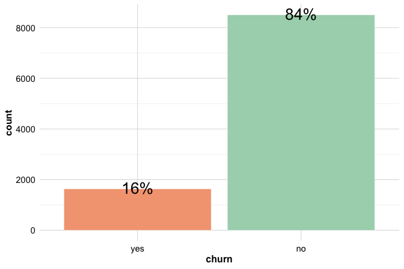
The plot shows that most customers remain active (churn = "no"), while a smaller proportion, about 16 percent, have closed their accounts. The height of each bar represents the number of customers in that category, while the labels show the corresponding percentages. This class imbalance is important because raw counts are dominated by the majority class. In later classification tasks, it also affects how model performance should be interpreted: a model may appear accurate simply because it predicts the majority outcome well.
Practice: Before examining
genderin relation to churn, create a simple bar plot ofgenderusing ggplot2. What does the plot tell you about the distribution of customers across gender categories?
Having established the overall distribution of the target variable, the next step is to explore how other categorical features vary across churn outcomes. These comparisons help identify customer segments and behavioral patterns that may be associated with elevated attrition risk.
Relationship Between Gender and Churn
We first examine gender as a simple example of comparing a categorical predictor with the churn outcome. In this dataset, gender is recorded as a binary category. This coding is a limitation of the available data and should not be interpreted as representing the full diversity of gender identities.
ggplot(data = churn) +
geom_bar(aes(x = gender, fill = churn)) +
labs(x = "Gender", y = "Count", title = "Counts of Churn by Gender")
ggplot(data = churn) +
geom_bar(aes(x = gender, fill = churn), position = "fill") +
labs(x = "Gender", y = "Proportion", title = "Proportion of Churn by Gender")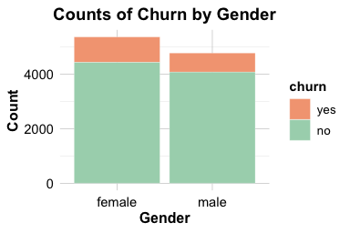
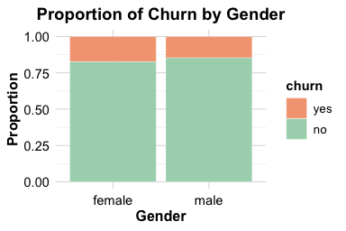
The count plot shows the number of churners and non-churners within each gender group, while the proportional plot compares churn rates across groups. The proportional view suggests a slightly higher churn rate among female customers, but the difference is small and should not be overinterpreted.
The corresponding contingency table provides a numerical check:
addmargins(table(churn$churn, churn$gender,
dnn = c("Churn", "Gender")))
Gender
Churn female male Sum
yes 930 697 1627
no 4428 4072 8500
Sum 5358 4769 10127The table confirms that gender does not strongly separate churners from non-churners in this dataset. At this stage, the result is descriptive rather than inferential. Formal tests for differences in proportions are introduced in Chapter 5.
Practice: Compute the churn rate separately for male and female customers. Compare the numerical rates with the proportional bar plot above. Does
genderappear to provide a strong exploratory signal for churn?
Relationship Between Card Category and Churn
The variable card_category classifies customers into four product tiers: blue, silver, gold, and platinum. This feature is useful for categorical EDA because it illustrates an important issue: apparent differences in churn rates should be interpreted together with the number of observations in each category. Small groups can produce unstable proportions, even when the visual difference appears noticeable.
ggplot(data = churn) +
geom_bar(aes(x = card_category, fill = churn)) +
labs(x = "Card Category", y = "Count")
ggplot(data = churn) +
geom_bar(aes(x = card_category, fill = churn), position = "fill") +
labs(x = "Card Category", y = "Proportion")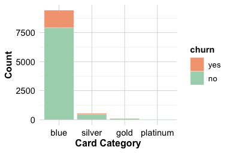
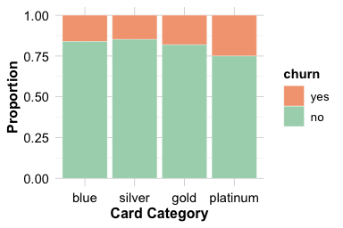
The count plot shows that the distribution of customers across card categories is highly imbalanced, with most customers holding a blue card. The proportional plot allows churn rates to be compared within each tier, but the smaller silver, gold, and platinum groups require caution. Differences in these smaller groups may reflect genuine variation, random fluctuation, or both. For this reason, the count and proportional plots should be interpreted together rather than separately.
The corresponding contingency table makes the group sizes and churn counts explicit:
addmargins(table(churn$churn, churn$card_category,
dnn = c("Churn", "Card Category")))
Card Category
Churn blue silver gold platinum Sum
yes 1519 82 21 5 1627
no 7917 473 95 15 8500
Sum 9436 555 116 20 10127From an exploratory perspective, card_category may contain some signal about churn, but its interpretation is affected by the strong imbalance in group sizes. For later modeling, analysts may consider whether a simpler grouping, such as standard versus premium cards, improves interpretability without losing useful information. Such a decision should be justified by both the observed data structure and the substantive meaning of the categories.
Practice: Reclassify the card categories into two groups,
"blue"and"premium", using thefct_collapse()function from the forcats package. Then recreate the count and proportional bar plots. Does the simplified grouping make the churn pattern easier to interpret? What information is lost by combining the smaller card categories?
Relationship Between Marital Status and Churn
Marital status provides another example of comparing a categorical feature with the churn outcome. In the churn dataset, the main substantive categories are married, single, and divorced, while the level "unknown" represents missing or unspecified information. We keep "unknown" visible during EDA, but we do not interpret it as an ordinary marital-status group.
ggplot(data = churn) +
geom_bar(aes(x = marital, fill = churn)) +
labs(x = "Marital Status", y = "Count") +
theme(axis.text.x = element_text(angle = 45, hjust = 1))
ggplot(data = churn) +
geom_bar(aes(x = marital, fill = churn), position = "fill") +
scale_y_continuous(labels = scales::percent) +
labs(x = "Marital Status", y = "Proportion") +
theme(axis.text.x = element_text(angle = 45, hjust = 1))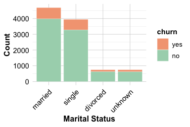
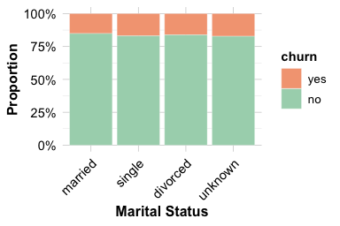
The count plot shows how customers are distributed across marital-status categories, while the proportional plot compares churn rates within each category. The proportional view suggests that churn rates are broadly similar across the substantive marital-status groups, with only modest differences. The "unknown" group should be interpreted cautiously because it represents unspecified information rather than a clearly defined customer group.
Overall, marital status does not appear to provide a strong exploratory signal for churn on its own. This conclusion is descriptive rather than inferential; formal tests of association between categorical variables are introduced in Chapter 5.
Practice: Examine whether
incomeandeducationare associated with churn. Create count and proportional bar plots, inspect the corresponding contingency tables, and consider whether the observed differences appear practically meaningful. For any"unknown"category, interpret it as missing or unspecified information rather than as an ordinary substantive group.
4.5 Exploring Numerical Features
The churn dataset contains numerical features that describe customer behavior, credit management, account activity, and engagement with the bank. Examining these features helps us understand how customers differ in service interactions, spending patterns, financial capacity, and changes in activity over time. These dimensions are often more directly connected to churn behavior than demographic characteristics, because they describe how customers use the account rather than only who the customers are.
To keep the analysis focused and interpretable, we concentrate on four representative numerical features. The variable contacts_count_12 captures service interaction with the bank, transaction_amount_12 reflects overall card usage, credit_limit describes financial capacity and account characteristics, and ratio_amount_Q4_Q1 summarizes recent change in transaction activity. Together, these features provide a compact view of several numerical patterns that may be associated with churn, while avoiding a repetitive feature-by-feature survey of the entire dataset.
In the following subsections, we use visualizations and selected numerical summaries to examine the distributions of these features and their relationships with customer churn. The goal is not to identify definitive causes of churn, but to recognize exploratory patterns, assess group overlap, and identify variables that may deserve closer attention in later statistical inference or predictive modeling. We also briefly note that some numerical features, such as months_on_book, show substantial overlap between churners and non-churners in this dataset and are therefore not emphasized in the main discussion.
Customer Contacts and Churn
The number of customer service contacts in the past year (contacts_count_12) provides insight into how often customers interact with the bank after opening or using their account. This variable is a count feature with small integer values, making bar plots more appropriate than boxplots or density plots. Bar plots clearly show how frequently customers contacted customer service and allow a direct comparison between churned and active accounts.
ggplot(data = churn) +
geom_bar(aes(x = contacts_count_12, fill = churn)) +
labs(x = "Number of Contacts in 12 Months", y = "Count")
ggplot(data = churn) +
geom_bar(aes(x = contacts_count_12, fill = churn), position = "fill") +
labs(x = "Number of Contacts in 12 Months", y = "Proportion")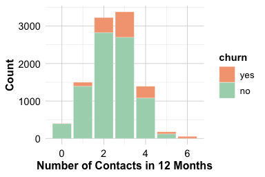
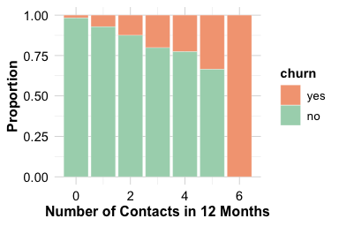
The count plot shows that most customers contact customer service two or three times per year, with fewer customers reporting either no contacts or more than four. The proportional bar plot shows a clear pattern: the proportion of customers who churn increases as the number of contacts rises. The increase is especially visible among customers with four or more contacts during the year.
Overall, contacts_count_12 provides a clearer exploratory signal than the demographic features examined earlier. Frequent contacts may reflect unresolved questions, service difficulties, or other forms of customer disengagement. The association is descriptive rather than causal, but it suggests that service-interaction patterns may be useful in later modeling and predictive analysis.
Transaction Amount and Churn
The total transaction amount over the past twelve months (transaction_amount_12) reflects how actively customers use their credit card. Higher spending is often associated with regular account use, whereas lower spending may indicate reduced engagement or a shift toward alternative payment methods. Because this feature is continuous, we use boxplots and density plots to examine how its distribution differs between customers who churn and those who remain active.
ggplot(data = churn) +
geom_boxplot(aes(x = churn, y = transaction_amount_12)) +
labs(x = "Churn", y = "Total Transaction Amount")
ggplot(data = churn) +
geom_density(aes(x = transaction_amount_12, fill = churn), alpha = 0.6) +
labs(x = "Total Transaction Amount", y = "Density")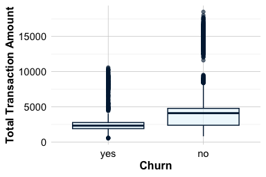
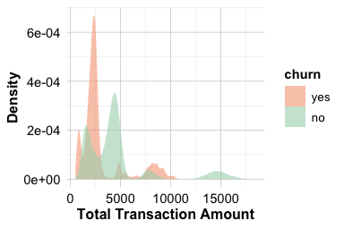
The boxplot highlights differences in central tendency, spread, and possible extreme values. The density plot provides a more detailed view of distributional shape. Because density curves are normalized within each churn group, they compare the shape of the distributions rather than the number of customers in each group. This distinction is important in an imbalanced dataset, where the active-customer group is much larger than the churned-customer group.
Together, the plots show that customers who churn tend to have lower total transaction amounts and a narrower range of spending. Customers who remain active show higher and more variable transaction volumes. This pattern suggests that lower annual spending is associated with churn in this dataset, although the plots alone do not establish whether reduced spending causes churn or whether both reflect a broader decline in customer engagement.
This feature therefore provides a useful behavioral signal for later analysis. It complements the service-contact feature examined in the previous subsection: while contacts_count_12 describes interaction with customer service, transaction_amount_12 describes actual account usage over the year.
Practice: Recreate the density plot for
transaction_amount_12using a histogram instead. Experiment with different bin widths and compare the resulting plots. How sensitive are your conclusions to these choices? Which visualization would you use for exploratory analysis, and which for reporting results?
Credit Limit and Churn
The total credit line assigned to a customer (credit_limit) reflects an account-level financial characteristic. Credit limits may be related to income, credit history, product tier, bank policy, or other factors that are not fully observed in the dataset. Because credit limits vary substantially across customers, we use violin plots and histograms to examine both distributional shape and differences between churn groups.
ggplot(data = churn, aes(x = churn, y = credit_limit, fill = churn)) +
geom_violin(trim = FALSE) +
labs(x = "Churn", y = "Credit Limit")
ggplot(data = churn) +
geom_histogram(aes(x = credit_limit, fill = churn), bins = 30) +
labs(x = "Credit Limit", y = "Count")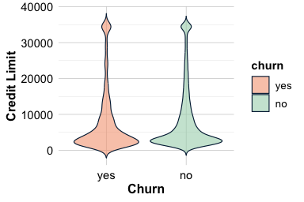
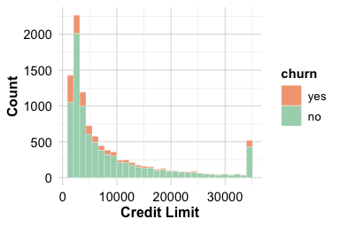
The violin plot shows substantial overlap in the distribution of credit limits between churners and non-churners, indicating that the two groups are not clearly separated by this feature alone. Customers who churn appear to have slightly lower credit limits on average, but the difference is modest. Both plots also show that the distribution of credit limits is strongly right-skewed, with many customers concentrated at lower credit limits and a smaller number of customers having substantially larger credit lines.
The histogram suggests a concentration of customers at lower credit limits, together with a smaller group of customers who have substantially larger credit lines. Whether these represent distinct customer segments would require further analysis. Taken together, the plots indicate that credit_limit may contain some exploratory signal, but the overall separation between churners and non-churners is limited.
Compared with behavioral indicators such as transaction activity or service contacts, credit_limit appears to provide a weaker differentiating signal on its own. Its value may lie in complementing other features rather than serving as a standalone indicator of churn. We assess whether the observed difference in average credit limits is statistically meaningful in Section 5.7, where we introduce formal hypothesis testing for numerical features.
Practice: Create boxplots and density plots for
credit_limitstratified by churn status. Compare these with the violin plot and histogram shown in this section. How do the different visualizations influence your perception of group overlap and central tendency? Discuss which plots are most informative at this exploratory stage.
Changes in Transaction Activity and Churn
The feature ratio_amount_Q4_Q1 compares total spending in the fourth quarter with total spending in the first quarter. It captures change in customer activity over time and provides a temporal view of engagement. A ratio below 1 indicates that spending in Q4 was lower than in Q1, whereas a ratio above 1 indicates increased spending toward the end of the year. Ratio features require caution because unusually small first-quarter values can produce large ratios. For this reason, we interpret ratio_amount_Q4_Q1 together with related activity measures, such as total transaction amount and transaction count, rather than treating it as a complete summary of customer engagement on its own.
ggplot(data = churn) +
geom_boxplot(aes(x = churn, y = ratio_amount_Q4_Q1)) +
labs(x = "Churn", y = "Transaction Ratio (Q4/Q1)")
ggplot(data = churn) +
geom_density(aes(x = ratio_amount_Q4_Q1, fill = churn), alpha = 0.6) +
labs(x = "Transaction Ratio (Q4/Q1)", y = "Density")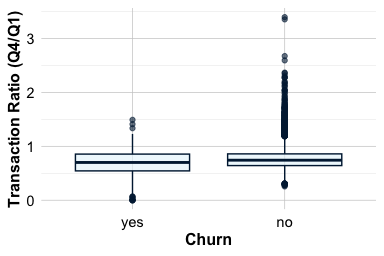
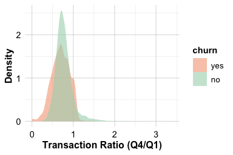
The boxplot compares the central tendency and spread of the Q4-to-Q1 transaction ratio across churn groups, while the density plot shows the distributional shape. Because density curves are normalized within each churn group, they compare distributional shape rather than the number of customers in each group. This distinction is important in an imbalanced dataset, where active customers are more common than churned customers.
The plots show that customers who churn tend to have lower Q4-to-Q1 transaction ratios, indicating reduced spending toward the end of the year. Customers who remain active are more likely to maintain or increase their spending. This pattern suggests that declining transaction activity may be associated with churn, although the plots do not establish whether reduced spending causes churn or whether both reflect a broader process of disengagement. Since ratio_amount_Q4_Q1 captures change rather than the overall level of activity, it should be interpreted together with total transaction amount and transaction count.
Practice: Repeat the analysis using
ratio_count_Q4_Q1, which compares the number of transactions in Q4 with the number of transactions in Q1. Compare the results with the plots forratio_amount_Q4_Q1. Do changes in transaction count and transaction amount tell a similar story about churn?
4.6 Exploring Multivariate Relationships
Univariate analyses help us understand individual features, but many exploratory questions involve relationships among several variables. In the churn dataset, multivariate EDA is useful for two main purposes: identifying redundant features that carry overlapping information, and examining how combinations of features relate to customer behavior and churn.
We begin with correlation analysis because it provides a compact way to detect numerical features that move together or are mathematically linked. We then examine joint patterns in transaction amount and transaction count, followed by the relationship between product tier and spending behavior. These views help us move beyond isolated feature summaries and develop a clearer picture of how customer activity is structured in the dataset.
Correlation and Redundancy Among Numerical Features
We begin the multivariate analysis by examining how numerical features relate to one another. Correlation analysis helps identify variables that tend to move together and may therefore carry overlapping information. This is especially useful before modeling, since highly correlated or mathematically derived features can complicate interpretation and may add little new information.
The Pearson correlation coefficient, denoted by \(r\), measures the strength and direction of a linear association between two numerical features. For two numerical features \(X\) and \(Y\), the sample Pearson correlation coefficient is defined as \[ r = \frac{ \sum_{i=1}^{n}(x_i - \bar{x})(y_i - \bar{y}) }{ \sqrt{\sum_{i=1}^{n}(x_i - \bar{x})^2} \sqrt{\sum_{i=1}^{n}(y_i - \bar{y})^2} }, \] where \(x_i\) and \(y_i\) denote the observed values of the two numerical features for observation \(i\), while \(\bar{x}\) and \(\bar{y}\) are their sample means. The numerator measures how the two features vary together, and the denominator standardizes this quantity so that \(r\) always lies between \(-1\) and \(1\). Positive values indicate that two features tend to increase together, negative values indicate an inverse relationship, and values close to zero indicate little linear association. Figure 4.2 illustrates these cases using scatterplots with different directions and strengths of linear association.
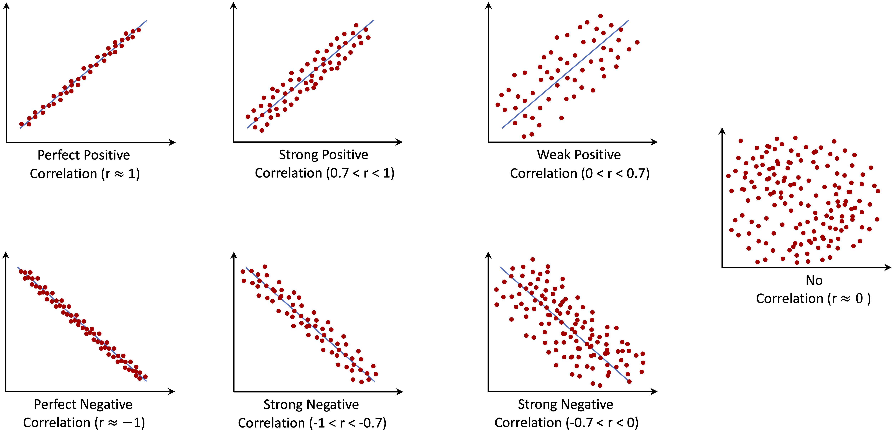
Correlation should not be interpreted as evidence of causation. For example, an association between customer service contacts and churn does not imply that contacting customer service causes customers to leave; both may reflect an underlying issue, such as unresolved questions or service difficulties. Figure 4.3 shows a well-known example: the association between per-capita chocolate consumption and Nobel Prize wins across countries (Messerli 2012). The example is useful because the causal interpretation is implausible. Readers interested in causal reasoning may consult The Book of Why by Judea Pearl and Dana Mackenzie (2018).
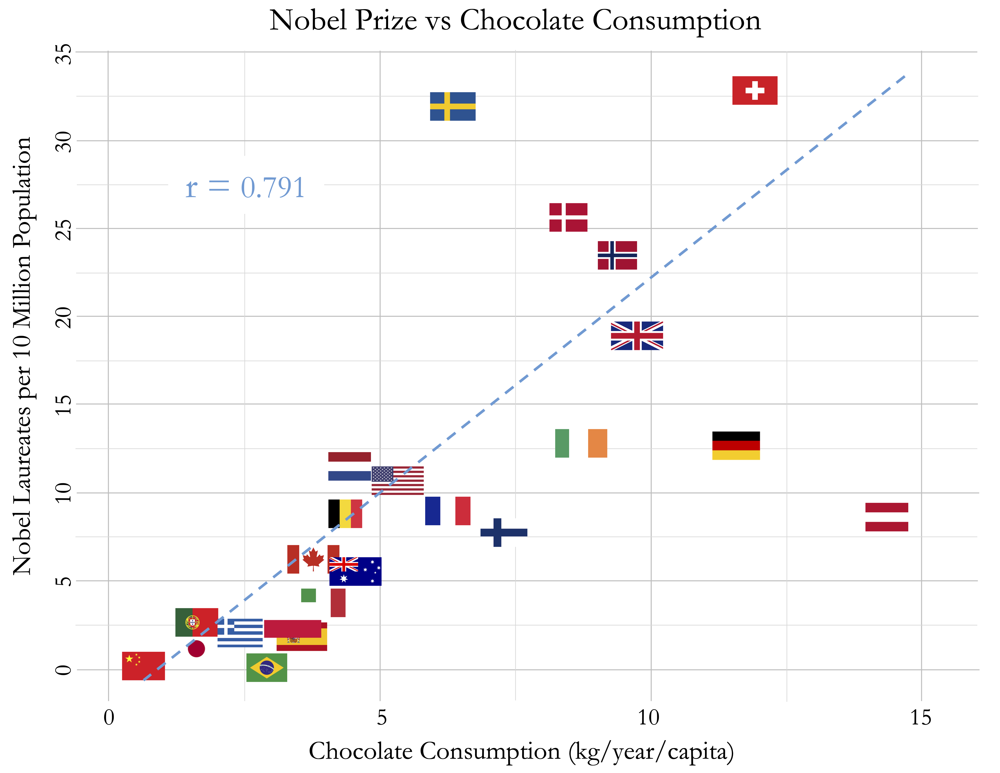
We now return to the churn dataset and compute the correlation matrix for the numerical features. The resulting heatmap provides a compact overview of linear associations and helps identify variables that may be redundant.
library(dplyr)
library(ggcorrplot)
numeric_churn = churn |>
select(where(is.numeric), -any_of("customer_ID"))
cor_matrix = cor(numeric_churn, use = "complete.obs")
ggcorrplot(cor_matrix, type = "lower", lab = TRUE, lab_size = 1.7, tl.cex = 6,
colors = c("#699fb3", "white", "#b3697a"),
title = "Correlation Matrix for Numerical Features") +
theme(plot.title = element_text(size = 10, face = "plain"),
legend.title = element_text(size = 7),
legend.text = element_text(size = 6))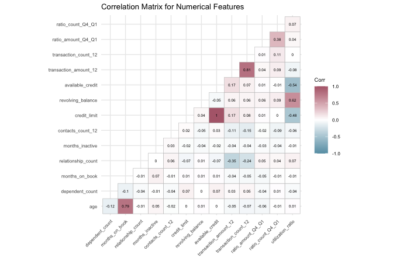
The heatmap suggests that many numerical features are only weakly or moderately correlated, indicating that they capture different aspects of customer behavior. Some variables, however, are structurally related. For example, available_credit is derived from credit_limit and revolving_balance: \[
\text{available credit} = \text{credit limit} - \text{revolving balance}.
\] Including all three variables in a model may therefore introduce redundancy. These variables do not necessarily play the same interpretive role: available_credit may be easier to communicate, while its component variables may provide more flexibility in modeling. The appropriate choice depends on the analytical objective.
A similar issue arises for utilization_ratio, which is defined as revolving balance divided by credit limit: \[
\text{utilization ratio} = \frac{\text{revolving balance}}{\text{credit limit}}.
\] This ratio provides a normalized measure of credit usage, but it is also mathematically linked to its component variables. The following plots illustrate this point. The first plot shows how utilization_ratio varies with credit_limit, while the second confirms the exact relationship between utilization_ratio and revolving_balance / credit_limit.
ggplot(data = churn) +
geom_point(aes(x = credit_limit, y = utilization_ratio), size = 0.1) +
labs(x = "Credit Limit", y = "Utilization Ratio")
ggplot(data = churn) +
geom_point(aes(x = revolving_balance / credit_limit,
y = utilization_ratio), size = 0.1) +
labs(x = "Revolving Balance / Credit Limit", y = "Utilization Ratio")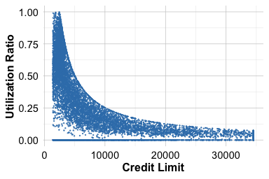
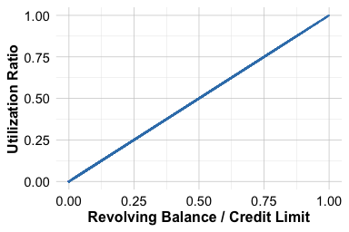
The first plot provides an exploratory view of how credit usage varies across credit limits. The second plot shows the deterministic relationship implied by the definition of utilization_ratio. Together, they illustrate an important point for later modeling: derived variables can be useful for interpretation, but including both a derived feature and all of its components may introduce redundancy. Such variables should therefore be included deliberately rather than automatically.
Practice: Create a three-dimensional scatter plot using
credit_limit,revolving_balance, andutilization_ratio. Because these features are mathematically linked, the points should lie close to a surface. Use plotly to explore the structure interactively. Does the three-dimensional view make the redundancy among these features more apparent?
Joint Patterns in Transaction Amount and Count
Transaction activity has two complementary dimensions: how much customers spend and how frequently they use their card. The features transaction_amount_12 and transaction_count_12 summarize these dimensions over a twelve-month period. Examining them jointly helps reveal usage patterns that are not visible from either feature alone. A scatter plot with marginal histograms is useful here because it shows both the joint relationship between the two features and the marginal distribution of each feature.
The code below first constructs a base scatter plot using ggplot2 and then applies ggMarginal() from the ggExtra package to add histograms along the horizontal and vertical axes:
library(ggExtra)
# Base scatter plot
scatter_plot <- ggplot(data = churn) +
geom_point(aes(x = transaction_amount_12, y = transaction_count_12,
color = churn), size = 0.1, alpha = 0.7) +
labs(x = "Transaction Amount", y = "Total Transaction Count") +
theme(legend.position = "bottom")
# Add marginal histograms
ggMarginal(scatter_plot, type = "histogram", groupColour = TRUE,
groupFill = TRUE, alpha = 0.5, size = 4)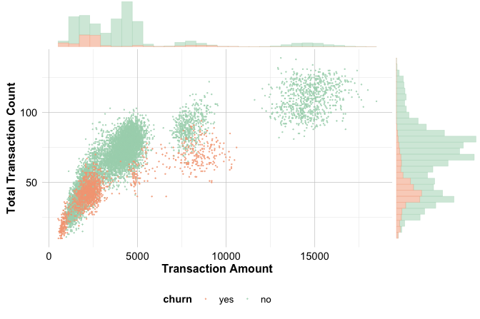
The central scatter plot shows a positive association: customers who spend more also tend to make more transactions. Most observations lie along a broad diagonal band, where churners and non-churners overlap substantially. The marginal histograms complement this view by showing how transaction amount and transaction count are distributed within each churn group.
The plot also suggests that low-activity customers are more common among churners. In particular, customers with low spending and relatively few transactions appear to have a higher churn rate than customers with high spending and frequent transactions. This pattern should be interpreted cautiously, since the plot is exploratory and the groups are not separated by sharp boundaries.
To examine this pattern more closely, we define an illustrative subset of customers with very low spending or with moderate spending but relatively few transactions. The thresholds used here are exploratory and should not be interpreted as a formal segmentation rule:
sub_churn = subset(churn,
(transaction_amount_12 < 1000) |
((2000 < transaction_amount_12) &
(transaction_amount_12 < 3000) &
(transaction_count_12 < 52))
)
ggplot(data = sub_churn,
aes(x = churn,
label = scales::percent(prop.table(after_stat(count))))) +
geom_bar(fill = c("#F4A582", "#A8D5BA")) +
geom_text(stat = "count", vjust = 0.4, size = 7) 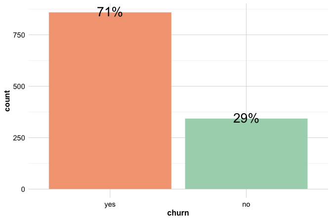
Within this illustrative subset, the proportion of churners is higher than in the full dataset. This supports the earlier observation that low or inconsistent card usage may be associated with churn. The example also shows why multivariate exploration can be informative: transaction amount and transaction count are useful individually, but their combination reveals usage patterns that are less apparent from univariate summaries.
For later modeling, this type of exploratory pattern may motivate the inclusion of both transaction amount and transaction count, or the construction of derived features that summarize customer activity. Such decisions should be evaluated formally during model development rather than based on visual inspection alone.
Practice: Replace
type = "histogram"withtype = "density"inggMarginal()to add marginal density curves. Then recreate the scatter plot usingratio_amount_Q4_Q1on the horizontal axis instead oftransaction_amount_12. Which version makes differences between churn groups easier to detect?
Product Tier and Spending Patterns
The feature card_category divides customers into four product tiers: blue, silver, gold, and platinum. The feature transaction_amount_12 measures the total amount spent over the past twelve months. Examining these features together helps us assess whether spending behavior differs across product tiers. This provides a multivariate view because it relates a categorical feature to a numerical feature.
Because transaction_amount_12 is continuous, density plots can be used to compare the shape, center, and spread of spending distributions across card categories. However, density curves are normalized within each group, so they compare distributional shape rather than the number of customers in each tier. This distinction is important because the card categories are highly imbalanced, with blue cardholders forming the dominant group.
ggplot(data = churn) +
geom_density(aes(x = transaction_amount_12, fill = card_category)) +
labs(x = "Total Transaction Amount", y = "Density", fill = "Card Category") 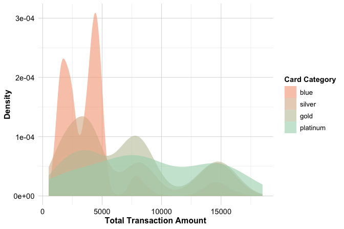
The density curves suggest that spending distributions differ across product tiers. Customers with gold and platinum cards tend to have higher transaction amounts, while blue cardholders are concentrated more strongly in the lower and middle spending ranges. Because the higher-tier groups contain fewer customers, their curves should be interpreted cautiously: apparent differences may be less stable than patterns observed in the much larger blue-card group.
This subsection illustrates how multivariate EDA can connect product information with behavioral activity. The relationship between card_category and transaction_amount_12 suggests that card tier captures some differences in spending behavior, but it should not be interpreted as a churn pattern on its own. In later modeling, this feature may be useful together with direct activity measures such as transaction amount, transaction count, and changes in transaction behavior over time.
Practice: Extend the multivariate exploration by examining how
ageormonths_on_bookrelates to transaction activity and churn. For example, create a scatter plot or smoothed trend plot using one of these features together withtransaction_amount_12ortransaction_count_12. Does the additional feature reveal a pattern that was not visible in the univariate analysis?
4.7 Chapter Summary and Takeaways
This chapter introduced exploratory data analysis as a practical and systematic stage of the Data Science Workflow. We used graphical and numerical summaries to examine data structure, feature distributions, placeholder levels such as "unknown", group differences, unusual observations, and relationships among variables. Throughout the chapter, we emphasized that EDA is descriptive rather than confirmatory: it helps identify patterns, limitations, and questions, but it does not by itself provide causal explanations or final statistical evidence.
Using the churn dataset, we showed how exploratory analysis can connect data summaries to a practical problem. The categorical analyses suggested that gender and marital provide limited separation between churners and non-churners, while card_category requires cautious interpretation because the product tiers are highly imbalanced. The numerical analyses showed stronger behavioral patterns: customers with more frequent service contacts, lower annual transaction amounts, and declining transaction activity appeared more likely to churn. These findings suggest useful directions for later analysis, but they should be interpreted as exploratory patterns rather than definitive explanations of customer attrition.
The chapter also highlighted the importance of examining relationships among variables. Correlation analysis helped identify redundant and derived features, especially among credit-related variables such as available_credit, credit_limit, revolving_balance, and utilization_ratio. Multivariate exploration further showed that transaction amount and transaction count jointly describe customer activity, and that product tier is related to spending behavior. These examples illustrate that effective EDA combines graphical displays, numerical summaries, and contextual reasoning to build a clearer understanding of the data before formal inference or predictive modeling begins.
The insights developed in this chapter provide the empirical foundation for Chapter 5, where we introduce statistical inference. There, we move from exploratory patterns to formal tools for quantifying uncertainty, comparing groups, and testing hypotheses suggested by the data.
4.8 Exercises
These exercises reinforce the main ideas of the chapter, progressing from conceptual questions to hands-on exploratory analysis with the churn and bank datasets, followed by integrative challenges and self-reflection.
Conceptual Questions
Why is exploratory data analysis an essential stage before statistical inference or predictive modeling? What risks may arise if this stage is skipped?
Explain the difference between univariate, bivariate, and multivariate exploration. Give one example of a question that belongs to each type.
What is the difference between counts, proportions, and conditional proportions? Explain how these summaries are useful when exploring categorical features.
Why should density plots be interpreted carefully when comparing groups of very different sizes?
What does it mean for two numerical features to be correlated? Explain the difference between positive correlation, negative correlation, and no clear linear association.
Why does correlation not imply causation? Give an example from the
churncase study or from another applied setting.What is feature redundancy? Explain how derived variables such as ratios or differences can create redundancy in a dataset.
If a feature shows only a weak relationship with the target variable during EDA, should it automatically be excluded from later modeling? Explain why or why not.
Hands-On Practice: Exploring the churn Dataset
Use the churn dataset from the liver package for Exercises 9 to 16.
Inspect the structure of the
churndataset. Identify which features are categorical and which are numerical.Examine the distribution of the target feature
churn. Is the dataset balanced or imbalanced with respect to the outcome?Create count and proportional bar plots for one categorical predictor, such as
gender,marital, orincome. What do the plots suggest about its relationship with churn?Examine the relationship between
card_categoryandchurn. Why should group size be considered when interpreting churn rates across card categories?Explore the numerical feature
contacts_count_12using suitable plots. What pattern do you observe in relation to churn?Compare the distribution of
transaction_amount_12between churners and non-churners using boxplots and density plots. What does each visualization reveal?Examine
ratio_amount_Q4_Q1by churn status. What does this feature suggest about changes in customer activity over time?Compute or visualize the correlation matrix for the numerical features in
churn. Identify one pair of variables that may be redundant and explain why.
Hands-On Practice: Exploring the bank Dataset
Use the bank dataset from the liver package for Exercises 17 to 25. The dataset contains information from direct marketing campaigns of a Portuguese bank. The outcome variable indicates whether a client subscribed to a term deposit.
Inspect the structure of the
bankdataset. Identify the target variable and classify the predictors as categorical or numerical.Examine the distribution of the target variable
deposit. What proportion of clients subscribed to a term deposit?Explore the relationship between
housing,loan, anddepositusing bar plots and contingency tables. What patterns do you observe?Examine the relationship between
jobanddeposit. Which job categories appear to have higher or lower subscription rates?Explore the relationship between
educationanddeposit. Do the observed differences appear practically meaningful?Visualize the distribution of
ageusing a histogram and compare age distributions bydepositstatus using a boxplot or density plot.Examine the feature
campaign, which records the number of contacts performed during the campaign. How does it relate to the subscription outcome?Compute and visualize correlations among the numerical features in the
bankdataset. Which numerical features appear most strongly related to one another?Summarize the main exploratory findings from the
bankdataset in one short paragraph. Which features appear most relevant for later modeling?
Integrative Challenge
Create a concise EDA report for either the
churnorbankdataset using two to four plots. Your report should identify the target variable, describe class balance, and summarize the most important exploratory patterns.Choose one categorical feature and one numerical feature from the same dataset. Examine how each relates to the target variable and discuss which appears more informative.
Identify one pair of features that may interact in relation to the target variable. Create a visualization that helps reveal the joint pattern.
Identify one feature that may be redundant, derived, or difficult to interpret. Explain how you would decide whether to keep, transform, or remove it before modeling.
Select one exploratory finding and describe how it could lead to a formal statistical question in Chapter 5 or to a modeling decision in a later chapter.
Self-Reflection
Which graphical or numerical summaries were most useful for understanding the datasets in this chapter? Explain your answer using one example.
How can EDA balance curiosity-driven exploration with methodological discipline? Discuss how analysts can avoid overinterpreting patterns found during exploration.